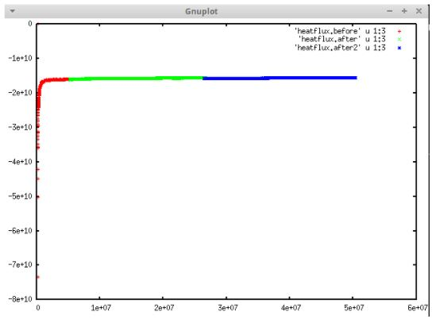

Paul Project¶
Python Scripts
- Automated post-processing scripts so they can be run more easily
- Both scripts now automatically determine the number of bins using tmp.profile file
- Both scripts can now read the tmp.profile that the lammps script outputs by default (no manual alterations or header deletion is necessary)
- Both scripts now automatically generate a heatflux file if one doesn’t exist already (using the log.lammps file)
- Both scripts now automatically write their calculated kappa value to a data file, writing the kappa value and the current date/time.
- The KR script will now take two data points per bulk region to generate the slopes and calculate ΔT at the interface
NEMD
Set up and ran simulations for Silicon Germanium Superlattices of varying number of atoms. Systems: 3072, 8192, 20992
Also ran bulk Silicon and Germanium
Transmission Set up and ran Transmission scripts to investigate phonon frequencies at interface and confined regions.
THIS WAS ADDED BY PAUL REMOTELY TEST TEST. ANOTHER ONE